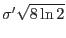

XMM-Newton Science Analysis System
ewavelet (ewavelet-3.11.2) [xmmsas_20170112_1337-16.0.0]
Output Files
- EPIC ewavelet
source list.
The source list will contain the following columns:
SRC_NUM, IMAX, JMAX,
X_IMA, Y_IMA, X_IMA_ERR,
Y_IMA_ERR, RA,DEC, RADEC_ERR,
SCTS, SCTS_ERR, WSCALE,
WCORR, XYCORR, RATE, EXTENT,
EXT_ERR, EXP_MAP and BG_MAP.
Most of them can also be found in the tasks eboxdetect
and
emldetect.
New are:
- IMAX, JMAX:
pixels (integer) where the maximum correlation value was found
(X_IMA, Y_IMA give a refined measurement of the position)
- WSCALE: the wavelet scale at which the source was found.
This gives
an indication of the source extent (in Gaussian
 ). Note that if
the value is comparable to the point spread function one is
probably dealing with a point source.
). Note that if
the value is comparable to the point spread function one is
probably dealing with a point source.
- WCORR: the maximum correlation value (
 in this description).
in this description).
- EXTENT and EXT_ERR:
gives the source extent (in image pixels) and its error
(not correcting for the spread function).
It is defined as
 (see eq. 6).
This corresponds to the FWHM for a Gaussian.
- XYCORR: Correlation value between X and Y.
Large values are an
indication of an elongated source with a position angle around 45.
- FITS image containing the final background map generated and used by
ewavelet.
- A fits image with the ``reconstructed image'': the detected sources
are represented by Gaussians with wavelet scale and normalization
the number of counts found by the algorithm.
This image will make it easy to compare results of the task with the input
image.
XMM-Newton SOC/SSC -- 2017-01-12